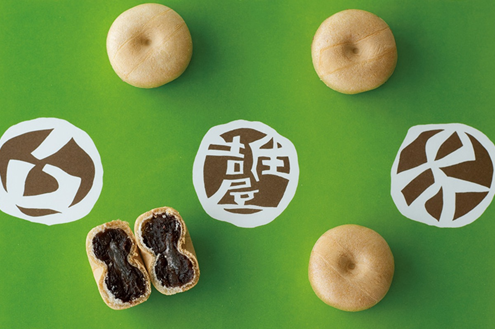
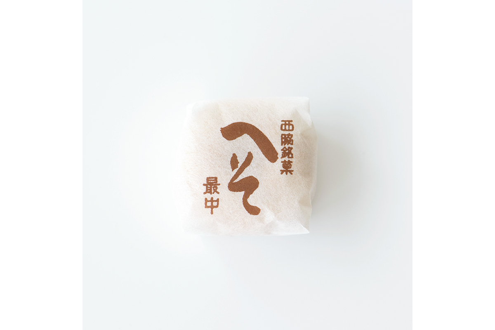
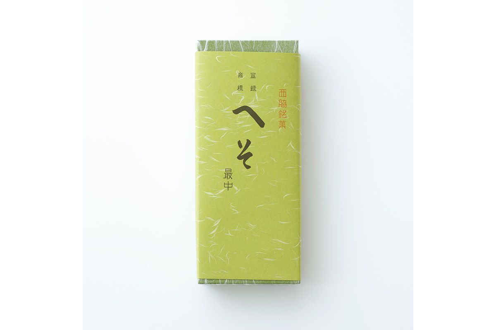
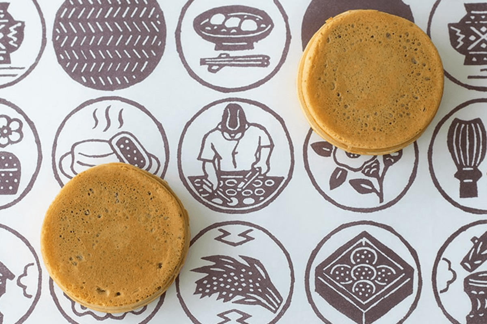
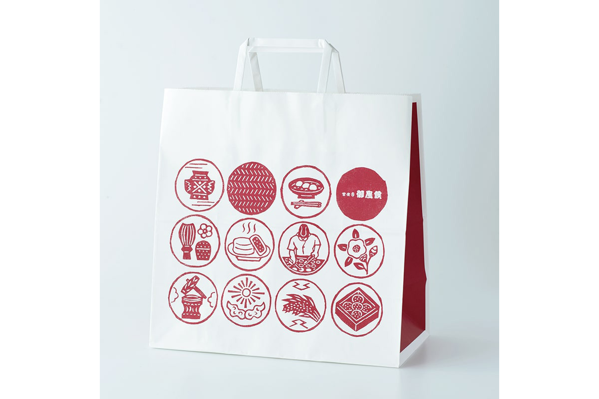
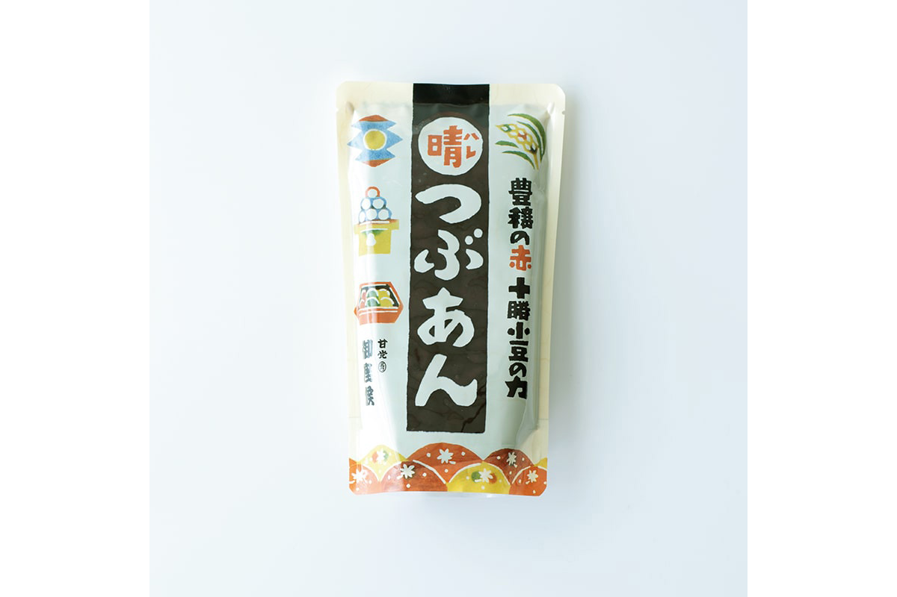

Префектура Хёго · Нисиваки и Химэдзи · сладости
Сладости Хёго в бумаге художников: «Хэсо-монака» из Нисиваки и «Годзасоро» из Химэдзи

В префектуре Хёго есть две недорогие сладости, которые местные покупают годами, не задумываясь об обёртке. А зря: одну упаковку нарисовал будущий знаменитый художник, другую ученик великого мастера народного ремесла.
Нисиваки
«Хэсо-монака»: пупок Японии в вафле
Город Нисиваки в префектуре Хёго стоит там, где пересекаются 135-й меридиан восточной долготы и 35-я параллель северной широты. Эту точку называют центром Японских островов, а по-домашнему «пупком Японии». Стоит это узнать, и становится понятно, почему главная сладость города называется «Хэсо-монака», то есть «монака-пупок», и почему на ней выдавлен пупок.
Монака это две хрустящие вафельные створки из рисового теста с начинкой из сладкой бобовой пасты. В лавке «Сумиёсия» створки в форме пупка выглядят очень мило, а паста внутри нежная и не приторная. Начинку кладут только после заказа, поэтому вафля остаётся хрустящей.


Обёртка
Первая работа Таданори Ёкоо
Самый известный уроженец Нисиваки это художник Таданори Ёкоо (род. 1936). Сегодня он признанный мастер современного искусства, а начинал как коммерческий дизайнер, причём дизайнер со статусом звезды: работал, среди прочего, в Японском центре дизайна. Обёрточную бумагу «Сумиёсия» называют, возможно, его самой первой работой. Ёкоо нарисовал её около 1952 года, когда учился в старшей школе.
На ярко-зелёном фоне белый круг, внутри него коричневое поле, а на нём белыми буквами название лавки, адрес и слова «булочки мандзю и моти». Неожиданно, но в этом рисунке сильно чувствуется влияние мингэй, японского движения за народное ремесло.
«Буквы, похожие на резные, поставлены так, что касаются дуги круга. Мне в этом видятся Кэйсукэ Сэридзава, Кандзиро Каваи и Сико Мунаката»
исследовательница сладостей и народного ремесла
Все трое были главными мастерами мингэй. Кэйсукэ Сэридзава (1895–1984) прославился тканями, окрашенными по трафарету. Кандзиро Каваи (1890–1966) был керамистом и одним из основателей движения. Сико Мунаката (1903–1975) стал знаменит гравюрами на дереве.
Лавка «Сумиёсия»
- Адрес
- префектура Хёго, Нисиваки, Нисиваки, 974-7
- Телефон
- +81 795-22-3198
- Часы работы
- 9:00–17:00
- Выходные
- нерегулярно
Химэдзи
«Годзасоро»: горячая лепёшка с пастой

Плоский цилиндр из тонкого теста, а внутри много горячей бобовой пасты. Такую сладость знают по всей Японии, но в каждом регионе зовут по-своему, и названия не просто похожи, а совсем разные: имагаваяки, кайтэн-мандзю, обанъяки.
В префектуре Хёго и вокруг неё её часто называют «Годзасоро», хотя на самом деле это имя компании из Химэдзи, города с замком Химэдзи, объектом всемирного наследия ЮНЕСКО. Название фирмы и её главного товара взято из старинной вежливой фразы, которой благодарят покупателя: «Благодарим за покупку, премного обязаны». Начинок две: красная из бобов адзуки и белая. Обе сладкие ровно в меру, и две штуки исчезают незаметно. Консервантов и добавок для долгого хранения в них нет.


Упаковка
Узоры Коити Оданаки
Коити Оданака работает в технике окраски тканей по трафарету и учился у Кэйсукэ Сэридзавы, мастера, глубоко связанного с движением мингэй. Любителям сладостей его рисунки знакомы по коробкам печенья с грецкими орехами. В 2016 году «Годзасоро» обновила обёрточную бумагу, и для неё взяли трафаретную работу Оданаки.
Узор построен на кругах. Рядом с древними японскими символами, такими как моти, чай, рис и солнце, в них нарисованы и сами кондитеры, и от этой бумаги трудно оторвать взгляд. Бумага дешёвая, для массовой печати, но благодаря новой технике на ней видно даже, как расплывается тонкая линия краски.
Фабричный магазин «Годзасоро»
- Адрес
- префектура Хёго, Химэдзи, Або-ко, 611-1
- Телефон
- +81 79-282-2311
- Часы работы
- 10:00–17:00
- Выходные
- вторник
- Сайт
- gozasoro.co.jp